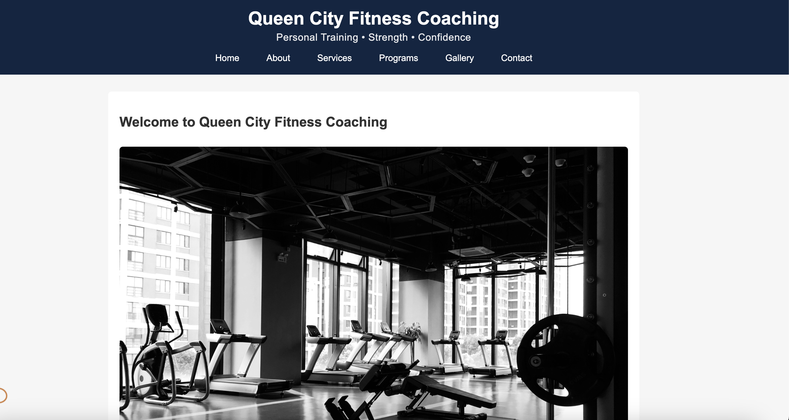

Hasty, Yordin

Evaluation
- Engaging layout with a strong brand identity.
- Consistent navigation across the project.
- Color palette matches the sports theme well.
- Images are sized properly and visually appealing.
- Content is clear, structured, and easy to follow.
- Pages feel well-connected and purposeful.
Website Checklist Review
- ✔ Semantic HTML structure used effectively.
- ✔ CSS is clean, organized, and modular.
- ✔ Good balance of text and images.
- ✔ Navigation is intuitive and accessible.
- ✔ Footer elements consistent across pages.
- ✔ Good spacing and visual hierarchy.
- ⬤ Minor suggestion: Add alt text to all images.
Requirements Review
- Homepage clearly defines theme and purpose → ✔ Met.
- Multiple polished pages → ✔ Met.
- Brand identity is strong and cohesive.
- Functional layout with working navigation.
- Next step: strengthen interactivity (JS features).
Constructive Suggestions
- Continue: Strong color branding and visual clarity.
- Start: Adding small transitions or hover effects.
- Stop: Avoid text blocks touching the edges—add more padding.
- Consider including a schedule, roster, or dynamic elements.
- A slideshow or gallery could enhance the site.